Un Ente è un'associazione, un Comune, una Pro Loco, una cooperativa di comunità, una scuola o un'università. Un Progetto è un'iniziativa a tempo in un territorio: una residenza temporanea, un festival, un gemellaggio, uno scambio tra scuole, un campo estivo. L'Ente porta un gruppo di persone in un posto per un periodo, e chiede alla gente del posto di farglielo conoscere.
L'Ente apre il Progetto, le persone del posto propongono esperienze collegate, i partecipanti si candidano. L'Ente coordina, non controlla: le esperienze le propongono sempre persone. Tutto è gratuito, anche per l'Ente.
L'Ente apre il Progetto
Periodo, comuni del territorio, cosa chiedete alle persone del posto. Lo staff verifica l'Ente e controlla il Progetto.
Le persone del posto propongono
Dalla pagina pubblica del Progetto aderiscono o propongono un'esperienza già collegata.
I partecipanti entrano con un codice
Con il codice o il link dell'Ente vedono anche le esperienze riservate a loro.
Numeri per la rendicontazione
Il Bilancio si aggiorna da solo e si stampa o si scarica a fine Progetto.
Se gestisci un Ente
Dalla proposta dell'Ente fino ai numeri di fine Progetto.
Da dove si parte
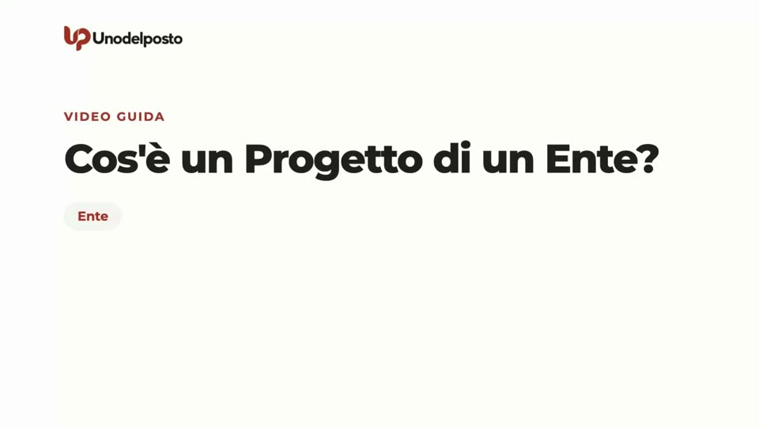
La pagina pubblica Per associazioni e Comuni spiega come funziona; il pulsante Proponi un progetto ti porta a registrare l'Ente. Non c'è un accesso separato per gli Enti: entri con il tuo account personale.
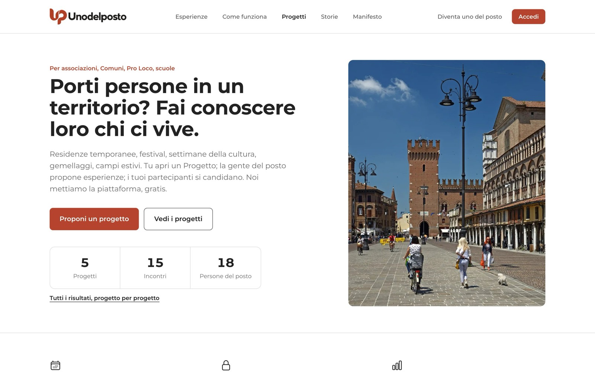
Proporre un Ente
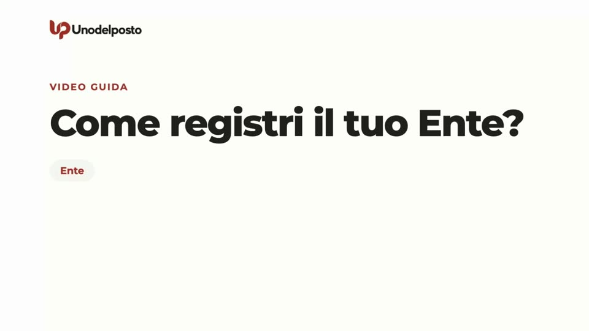
- Apri «Enti e progetti». Nel menu dell'area personale trovi Enti e progetti. Clicca Proponi un Ente.
- Compila i dati. Nome dell'Ente, tipo, comune della sede, sito web, email pubblica, telefono pubblico (facoltativo) e telefono per lo staff (obbligatorio, non è pubblico). Poi «Chi siete, in due righe» e il logo, se vuoi.
- Aggiungi gli altri dati, se li hai. In «Altri dati: indirizzo, PEC, dati fiscali, social». Sono facoltativi, ma aiutano lo staff a verificarvi più in fretta.
- Invia. Clicca Crea l'Ente e passa al progetto. L'Ente resta In verifica e intanto puoi già preparare il primo Progetto.
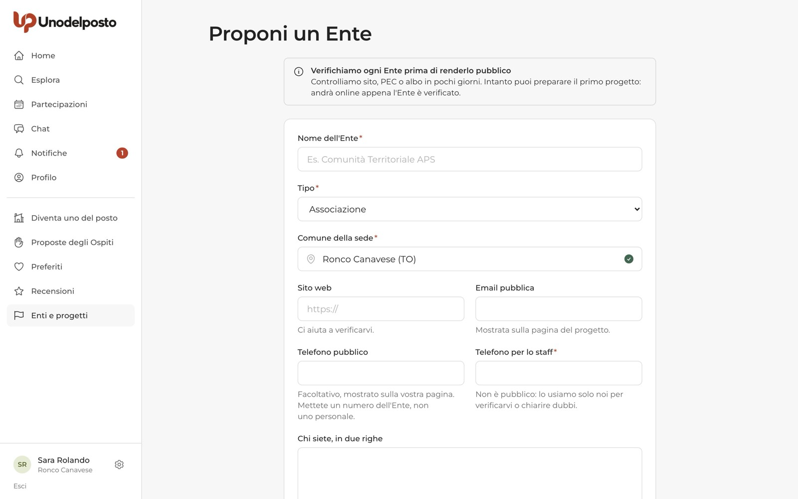
La pagina dell'Ente nell'area personale
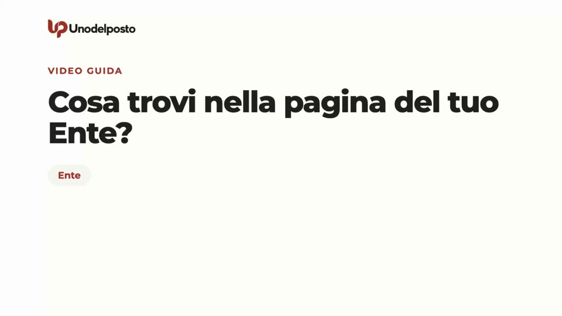
In Enti e progetti vedi gli Enti che gestisci. Con Apri entri nella pagina dell'Ente, dove trovi:
- Progetti: l'elenco con stato, periodo e numero di esperienze. In alto a destra c'è Nuovo progetto.
- Dati dell'Ente: modifichi e premi Salva.
- Esperienze nei vostri progetti: la casella Le approviamo noi prima della pubblicazione. Se la attivi, ogni esperienza collegata ai Progetti dell'Ente passa prima da te e dagli altri gestori.
- Gestori: le persone che gestiscono l'Ente, ognuna con il proprio account.
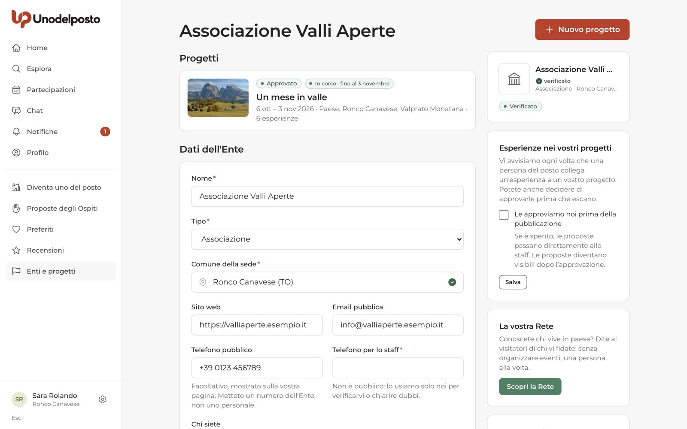
Dopo la verifica compaiono anche La vostra Rete, Persone affidate e Verifiche d'identità: sono funzioni separate dai Progetti.
Gestori e inviti
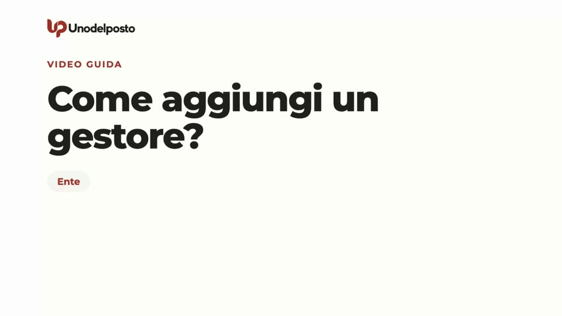
Ogni gestore è Referente (dell'Ente) o Gestore. Tutti creano e seguono Progetti; i referenti dell'Ente, in più, aggiungono e tolgono gestori. Per aggiungere qualcuno scrivi la sua email in «Aggiungi un gestore», scegli il ruolo e premi Aggiungi. Chi non ha un account riceve un invito e diventa gestore quando crea l'account e verifica l'email.
Creare un Progetto
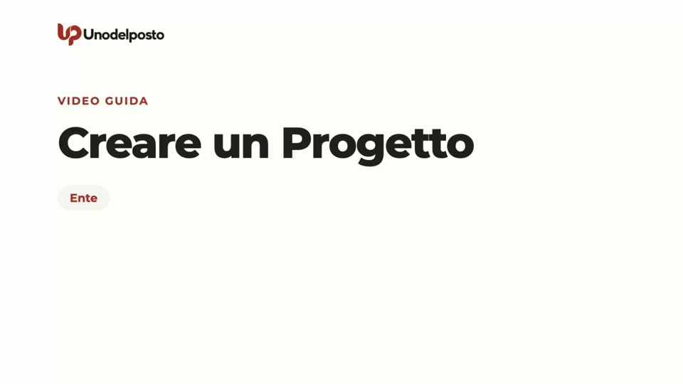
Clicca Nuovo progetto. Il modulo ha quattro parti.
- Il progetto. Nome, sottotitolo (una frase: cosa è e per chi), descrizione di almeno 120 caratteri e il sito o la pagina del Progetto.
- Quando e dove. Le date «Dal» e «Al» (al massimo 120 giorni), i comuni del territorio (ne aggiungi uno alla volta), il raggio attorno ai comuni in km per chi vive nei paesi vicini (0 = solo i comuni in lista) e, se vuoi, quante persone arrivano.
- Cosa chiedete alle persone del posto. Due righe che compaiono in evidenza sulla pagina del Progetto. Parla a una persona del paese, non a un ufficio. Qui scegli anche Chi può candidarsi alle esperienze del progetto (vedi sotto).
- Copertina. Una foto vera del territorio.
Clicca Salva la bozza. Il Progetto resta in Bozza.
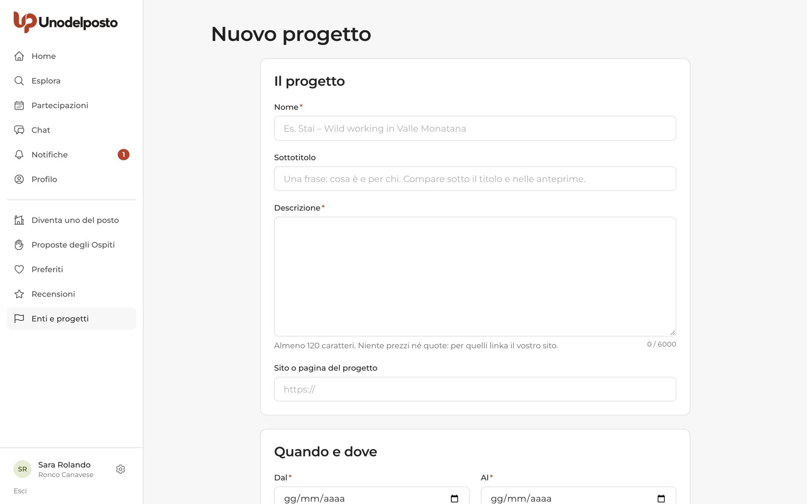
Chi può candidarsi
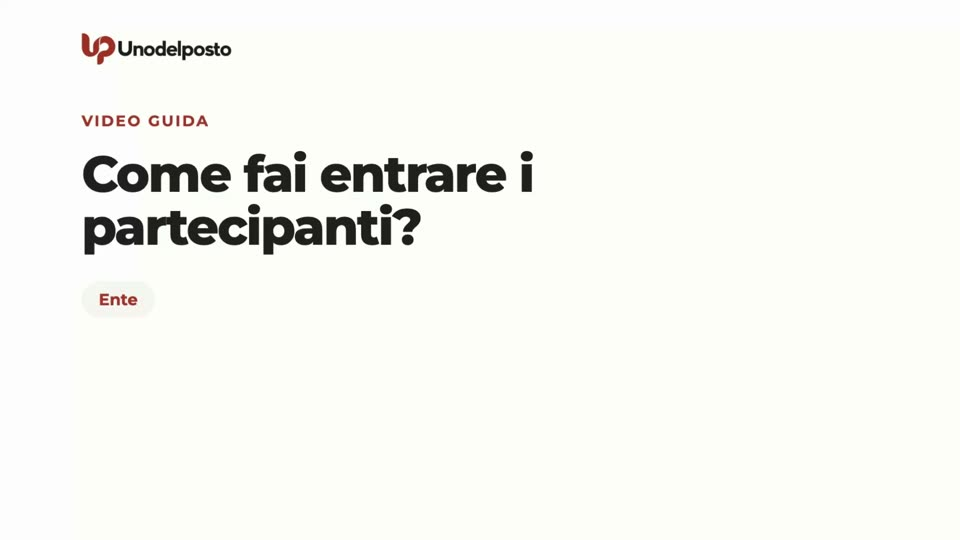
Scegli una di tre regole, valida per tutto il Progetto:
- Tutti, salvo scelta diversa della persona del posto: le esperienze sono pubbliche, ma chi propone può riservare la sua ai partecipanti.
- Solo i partecipanti, salvo scelta diversa della persona del posto: invisibili a chi non ha il codice, ma chi propone può aprire la sua a tutti.
- Solo i partecipanti, sempre: nessuno può aprirle a tutti; chi vuole farlo pubblica fuori dal Progetto.
Un'esperienza riservata esiste solo per i partecipanti: fuori dal gruppo non se ne vedono titolo, data né autore. La pagina pubblica mostra solo quante sono.
Inviare il Progetto al controllo
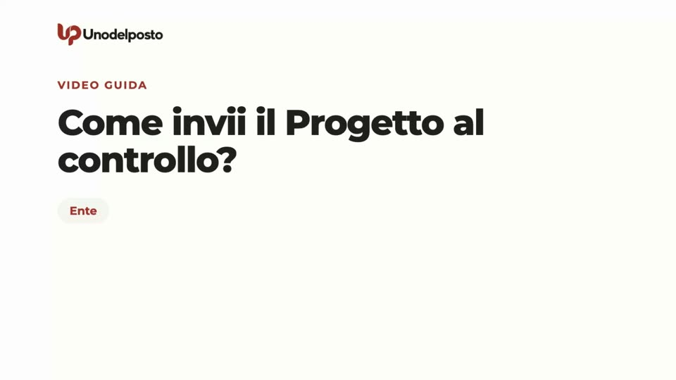
Dopo il salvataggio arrivi alla pagina di gestione del Progetto. Se manca qualcosa, un riquadro elenca cosa completare: descrizione, periodo, almeno un comune, le due righe per le persone del posto, la copertina. Quando è tutto a posto compare Il progetto è completo con il pulsante Invia in approvazione.
| Stato | Cosa significa |
|---|---|
| In approvazione | Lo staff lo sta esaminando. Intanto puoi aggiungere richieste. |
| Approvato | La pagina pubblica è online. |
| Rifiutato | Leggi il motivo, correggi e invialo di nuovo. |
| Sospeso | Lo staff ha nascosto la pagina. Il motivo è scritto in alto. |
Se l'Ente è ancora in verifica puoi inviare lo stesso: il Progetto sarà approvato appena l'Ente è verificato.
La pagina di gestione del Progetto
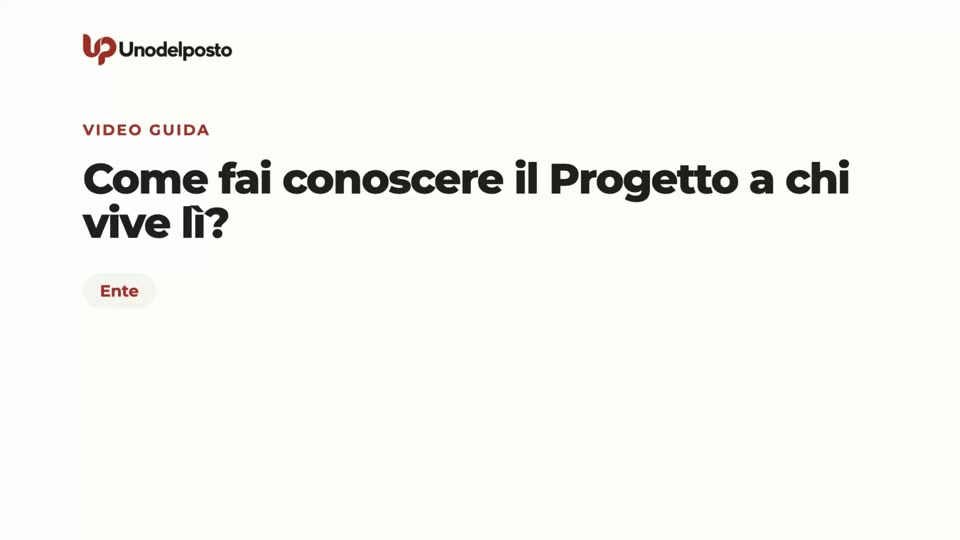
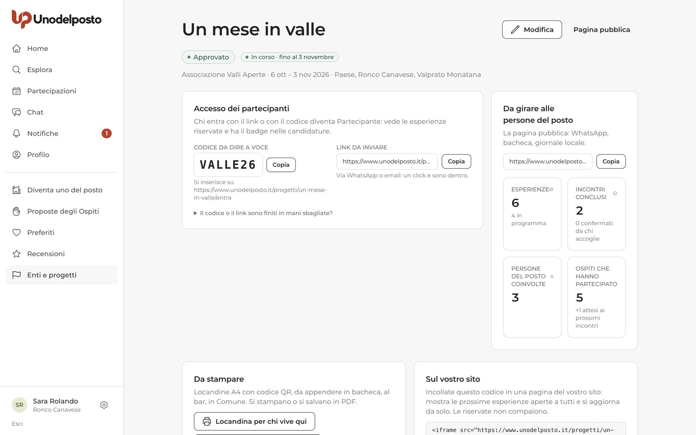
- Accesso dei partecipanti. Il codice da dire a voce e il link da inviare via WhatsApp o email, ognuno con il suo Copia. Chi entra con l'uno o con l'altro diventa Partecipante.
- Da girare alle persone del posto. Il link alla pagina pubblica del Progetto, per WhatsApp, la bacheca, il giornale locale. Da lì le persone del posto propongono esperienze.
- Da stampare. Due locandine A4 con QR: Locandina per chi vive qui (porta alla pagina del Progetto) e Locandina per i partecipanti (porta alla pagina d'ingresso, con il codice). Si stampano o si salvano in PDF.
- Sul vostro sito. Un codice da incollare nel sito dell'Ente: mostra le prossime esperienze aperte a tutti e si aggiorna da solo. Le riservate non compaiono. Usa Copia il codice e controlla con Anteprima.
Le schede del Progetto
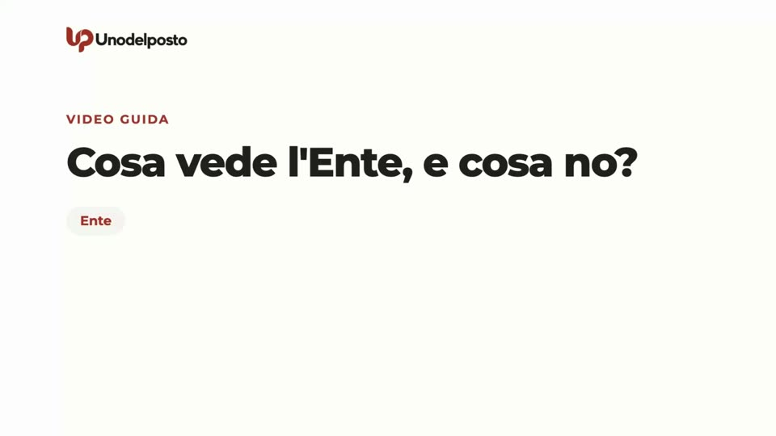
Sotto ci sono le schede Calendario (le esperienze collegate, mese per mese e in elenco), Persone del posto (chi ha pubblicato e chi ha solo aderito), Richieste, Partecipanti, Annunci e Bilancio. Dei partecipanti vedi nome, comune e numero di incontri, mai i contatti. Con Rimuovi togli una persona: non vedrà più le esperienze riservate, ma le candidature già approvate restano.
Approvare, non accettare, scollegare
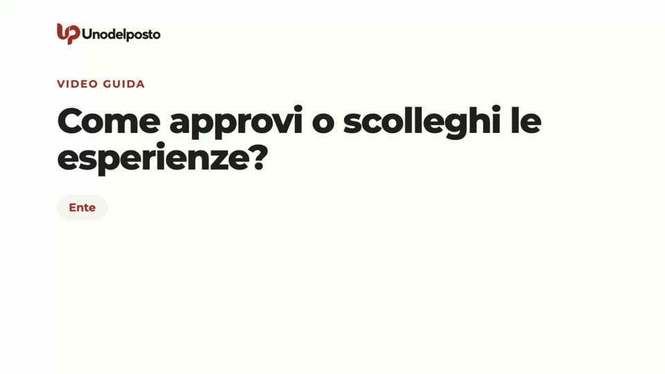
Se hai attivato Le approviamo noi prima della pubblicazione, le esperienze proposte compaiono in cima, in Da approvare. Le leggi con Leggi la proposta.
- Approva la proposta: nella fase pilota, dopo l'Ente serve anche il controllo dello staff prima che l'esperienza sia visibile.
- Non accettare: scrivi un motivo. L'esperienza torna in bozza alla persona del posto, si scollega dal Progetto, e lei può pubblicarla fuori dal Progetto.
Se la casella è spenta, le proposte passano direttamente al controllo dello staff e tu ricevi solo l'avviso. In ogni caso, nell'elenco del Calendario c'è Scollega per un'esperienza fuori tema: scrivi il motivo, l'esperienza resta pubblicata ma esce dal Progetto, e la persona del posto viene avvisata.
Le richieste
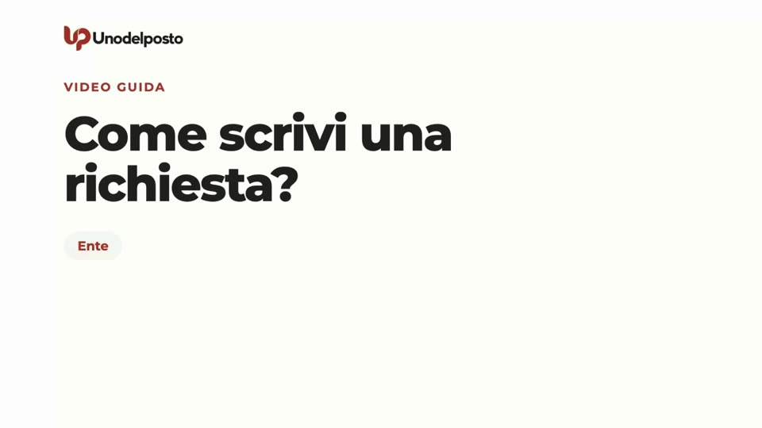
Una richiesta è un'idea concreta che una persona del posto può raccogliere, come «Una serata di racconti in dialetto». Funziona meglio di un invito generico. Nella scheda Richieste, nel riquadro Nuova richiesta, scrivi «Cosa vi piacerebbe», i dettagli e, se vuoi, una categoria, poi premi Aggiungi. La richiesta compare sulla pagina pubblica con il pulsante Raccolgo questa. Ogni richiesta è aperta o raccolta: quando è raccolta vedi da chi e con quale esperienza.
Gli annunci
Nella scheda Annunci scegli A chi (Persone del posto aderenti, Partecipanti, oppure Persone del posto e Partecipanti), scrivi il testo e premi Invia. Arriva come notifica ed email. Puoi mandare un annuncio al giorno per pubblico, e solo con il Progetto approvato. Non è una chat: si risponde candidandosi o aderendo. Il testo passa dalla moderazione, quindi niente richieste di denaro.
Bilancio e rendicontazione
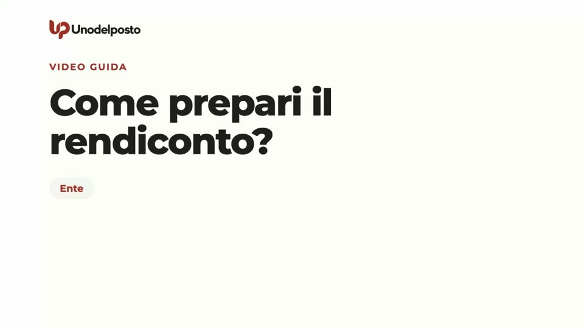
Il Bilancio si aggiorna da solo: esperienze, incontri conclusi e confermati, persone del posto e Ospiti coinvolti, ore-persona stimate, voto medio, numeri per comune e per categoria. Tiene separato quello che è successo da quello che è in programma.
Per allegarlo a un rendiconto usa Stampa o salva PDF (con i loghi) oppure Scarica CSV. Contiene solo numeri aggregati e recensioni già pubbliche: nessun dato personale.
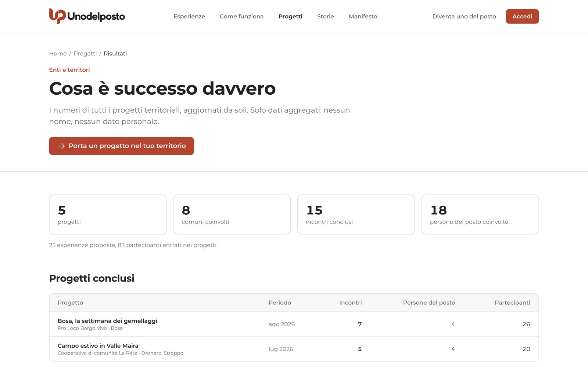
A Progetto concluso, la sua pagina pubblica mostra «Com'è andata» con i numeri. La pagina Cosa è successo davvero raccoglie i numeri di tutti i Progetti e la tabella di quelli conclusi.
Se vivi nel territorio del Progetto
Puoi dire «ci sono» o proporre subito un'esperienza.
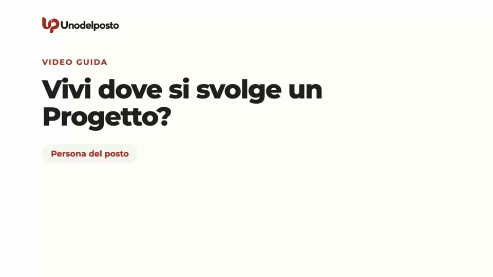
Sulla pagina pubblica del Progetto, nel riquadro Vivi qui?, leggi cosa chiede l'Ente e trovi due strade.
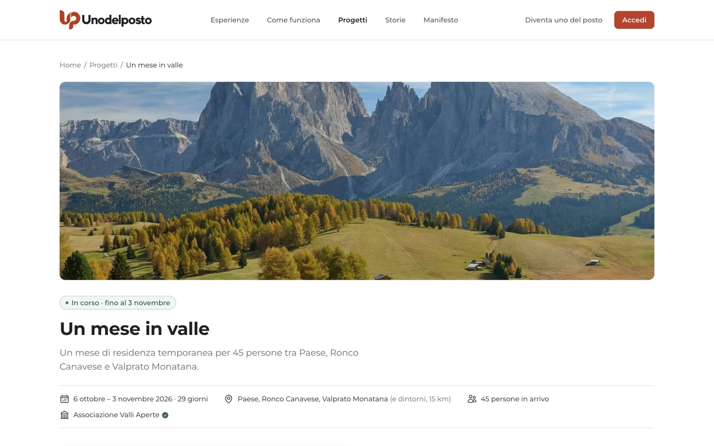
- Aderisco: contate su di me. Un clic, nessun modulo. Dici all'Ente che ci sei e ricevi i suoi annunci. Puoi tornare indietro con Ritira l'adesione.
- Proponi un'esperienza. Apre il modulo della nuova esperienza già collegato al Progetto. Se non hai ancora il profilo del posto, il pulsante dice Diventa uno del posto e proponi.
Puoi anche scegliere un'idea tra le Richieste aperte e premere Raccolgo questa.
Proporre un'esperienza per il Progetto
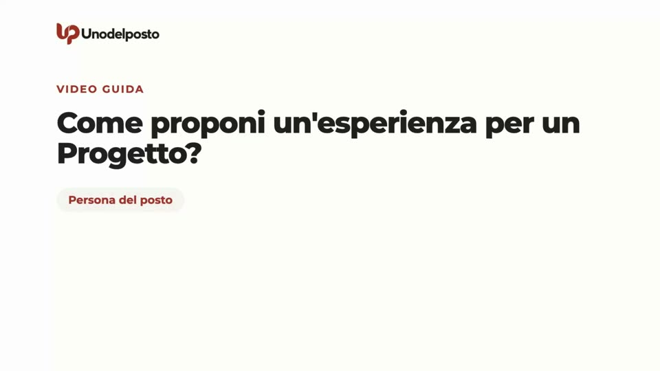
- Controlla il Progetto in alto. Sopra il modulo c'è il nome del Progetto; con Scollega proponi fuori dal Progetto.
- Resta nei limiti. Data nel periodo del Progetto, comune nel territorio o entro il raggio scelto dall'Ente.
- Scegli chi può candidarsi. In Chi può candidarsi?: Solo i partecipanti del progetto (invisibile a tutti gli altri, serve il codice dell'Ente) oppure Tutti. Se l'Ente ha scelto «solo i partecipanti, sempre», la scelta è bloccata: per aprirla a tutti devi scollegare il Progetto.
- Invia. Dal riepilogo invii la proposta per il controllo.

Se crei un'esperienza normale che rientra in un Progetto attivo, nel passo «Quando» ti chiediamo se collegarla: Sì, collega o No. Se l'Ente scollega la tua esperienza, resta pubblicata ma esce dal Progetto e ricevi il motivo. Nelle candidature, l'etichetta «Partecipante» col nome del Progetto dice che l'Ente ha ammesso quella persona, non che ne ha verificato l'identità.
Se partecipi a un Progetto
L'Ente ti ha dato un codice o un link: con quello entri nel Progetto.
- Usa il link o il codice. Il link (via WhatsApp o email) ti porta dentro con un clic. Il codice, detto a voce o letto sulla locandina, va inserito nella pagina «Hai il codice del progetto?»: poi premi Entra nel progetto.
- Accedi o crea l'account. Se non ce l'hai, ne crei uno gratuito e verifichi l'email.
- Guarda le esperienze. Arrivi in Esplora con le esperienze del Progetto, anche quelle riservate. Sulla pagina del Progetto ora c'è Esplora le esperienze del progetto.
- Candidati. Come per ogni esperienza. Chi la propone vede che fai parte del Progetto.
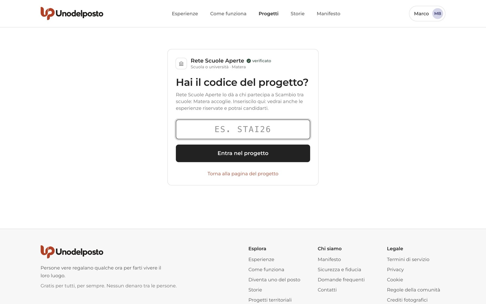
Cosa fa lo staff
Due controlli, prima che qualcosa diventi pubblico.
Lo staff di Unodelposto verifica ogni Ente con fonti pubbliche come sito, PEC o albo, e lo approva o lo rifiuta con un motivo. Poi controlla ogni Progetto inviato: lo approva, lo rifiuta con un motivo o, se serve, lo sospende. Nella fase pilota controlla anche ogni esperienza prima che sia visibile. L'Ente riceve un'email a ogni decisione.
Domande frequenti
L'Ente può pubblicare le esperienze a suo nome?
No. Chi lavora nell'Ente e vuole proporre qualcosa, come una cena di benvenuto, lo fa con il suo account e la collega al Progetto.
Il nostro Progetto prevede un contributo per l'alloggio. Possiamo scriverlo?
Non sulla pagina del Progetto. Le quote sono un accordo tra l'Ente e i partecipanti e restano fuori da Unodelposto: vanno sul sito dell'Ente, che puoi linkare. I testi con prezzi o quote vengono segnalati alla moderazione.
Un partecipante non trova le esperienze riservate. Perché?
Probabilmente non è ancora entrato con il link o il codice. Finché non lo fa, le esperienze riservate per lui non esistono. Un annuncio ai partecipanti può ricordargli il codice.
Ti serve su carta?
La stessa guida in PDF, da stampare o inviare.